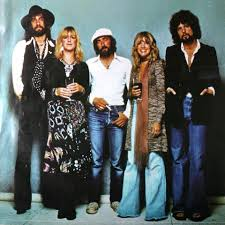

History of the Band!
Fleetwood Mac are a British-American rock band, formed in London in 1967. Fleetwood Mac were founded by guitarist Peter Green, drummer Mick Fleetwood and guitarist Jeremy Spencer, before bassist John McVie joined the lineup for their self-titled debut album. Danny Kirwan joined as a third guitarist in 1968. Keyboardist Christine Perfect, who contributed as a session musician from the second album, married McVie and joined in 1970.
Primarily a British blues band, Fleetwood Mac scored a UK number one with "Albatross",[6] and had other hits such as the singles "Oh Well" and "Man of the World". All three guitarists left in succession during the early 1970s, to be replaced by guitarists Bob Welch and Bob Weston and vocalist Dave Walker. By 1974, all three of them had either departed or been dismissed, leaving the band without a male lead vocalist or guitarist. In late 1974, while Fleetwood was scouting studios in Los Angeles, he was introduced to American folk-rock duo Lindsey Buckingham and Stevie Nicks. Fleetwood Mac soon asked Buckingham to be their new lead guitarist, and Buckingham agreed on condition that Nicks would also join the band.
The addition of Buckingham and Nicks gave the band a more pop rock sound, and their 1975 self-titled album, Fleetwood Mac, reached No. 1 in the United States. Rumours (1977), Fleetwood Mac's second album after the arrival of Buckingham and Nicks, produced four U.S. Top 10 singles and remained at number one on the American albums chart for 31 weeks. It also reached the top spot in various countries around the world and won a Grammy Award for Album of the Year in 1978. Rumours has sold over 40 million copies worldwide, making it the one of the best-selling albums in history. The band went through personal turmoil while recording the album, as both the romantic partnerships in the band (one being John and Christine McVie, and the other being Buckingham and Nicks) separated while continuing to make music together.
The band's personnel remained stable through three more studio albums, but by the late 1980s began to disintegrate. After Buckingham and Nicks each left the band, they were replaced by a number of other guitarists and vocalists. A 1993 one-off performance for the first inauguration of Bill Clinton featured the lineup of Fleetwood, John McVie, Christine McVie, Nicks, and Buckingham back together for the first time in six years. A full reunion occurred four years later, and the group released their fourth U.S. No. 1 album, The Dance (1997), a live compilation of their hits, also marking the 20th anniversary of Rumours. Christine McVie left the band in 1998, but continued to work with the band in a session capacity. Meanwhile, the group remained together as a four-piece, releasing their most recent studio album, Say You Will, in 2003. Christine McVie rejoined the band full-time in 2014. In 2018, Buckingham was fired from the band[7] and was replaced by Mike Campbell, formerly of Tom Petty and the Heartbreakers, and Neil Finn of Split Enz and Crowded House.